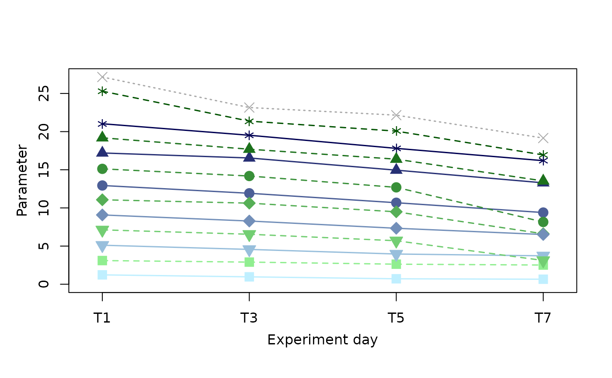

Creates a timeline plot over the sampled days with a line per mesocosm. It works on an excel datasheet following the common KOSMOS layout, assuming a continuous independent variable and a categorical variable with two factors. The current version is limited to work with the KOSMOS Kiel spring 2024 campaign.
KOSMOStimeplot(
dataset = KOSMOStestdata,
parameter = dimnames(dataset)[[2]][ncol(dataset)],
ylabel = parameter,
xlabel = "Experiment day",
control = "Fjord",
baseline = FALSE,
treatment.abline = FALSE,
ignore = FALSE,
startat0 = TRUE,
headspace = 0,
includeThisInYlimit = FALSE,
ylimit = FALSE,
xlimit = FALSE,
axis.tick = "xy",
axis.show = "xy",
stats.show = FALSE,
stats.days = FALSE,
stats.ignore = FALSE,
stats.digits = FALSE,
stats.location = "bottom",
stats.meanlabel = c("below", "above"),
stats.doublespecial = FALSE,
copepod.draw = FALSE,
copepod.position = "top",
new.plot = TRUE,
...
)A data set object following the common KOSMOS layout, i.e. loaded from the standard excel data sheet. If left empty, an example dataset KOSMOStestdata will be plotted to showcase the function.
The column name of the response variable to be plotted given as a string. Defaults to the last column in the data table.
The y-axis label to be printed. Defaults to the same value as parameter.
The x-axis label to be printed. Defaults to "Experiment day".
A sample that stands out of the experimental design, such as a harbour or fjord sample, and shall be plotted in a separate style. Name the identifier from the "Mesocosm" or "Treat_Meso" column. Defaults to "Fjord"
(currently unavailable)
Should treatment additions be marked with vertical lines? TRUE or False. Defaults to TRUE, which means "yes".
List one or multiple mesocosm numbers to exclude those from the plot, i.e. c(1,3,10).
Should the y-axis start at 0? TRUE or False. Defaults to TRUE.
More space needed above the data lines to include additional features such as labels? headspace enlarges the y-axis range by the given factor (i.e. 0.25) by setting the upper axis limit to 125% of the original value. Defaults to 0.
Set this to any value you want included in the range of the y-axis. If the value anyway falls within the range nothing will change, otherwise the lower or upper end of the Y-axis will be shifted to accommodate it. Can be useful if you wish display certain thresholds or reference values.
Set a fixed range for the y-axis following the pattern c("lower end", "upper end"). This overwrites startat0, headspace, and includeThisInYlimit. If set to FALSE (the default), the range will be defined based on the range of data values.
Set a fixed range for the x-axis following the pattern c("lower end", "upper end"). If set to FALSE (the default), the range will include all sampling days for which there is data in the table.
(will be made available with the next update)
(will be made available with the next update)
(will be made available with the next update)
(will be made available with the next update)
(will be made available with the next update)
(will be made available with the next update)
(will be made available with the next update)
(will be made available with the next update)
(don't ask...)
(outdated, unavailable)
(outdated, unavailable)
If set to FALSE, the plot will be plotted ontop of an existing, open plot rather than creating a new one. This is rather unstable prone to unexpected results.
Further arguments of the base-R plot-function can be passed on, such as setting a title or background to the plot.
Directly outputs the plot, either to the plot window or another graphics device (e.g. a .png file) if a connection has been opened.
KOSMOStimeplot()
